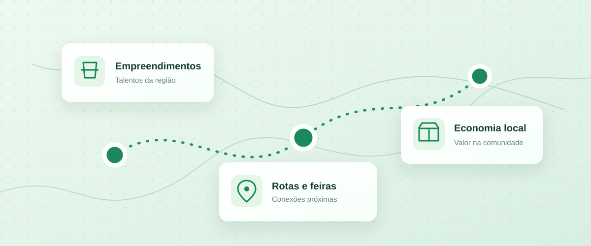

Whitepaper acadêmico · documentação em evolução

Uma tecnologia feita para conectar territórios
O LiberRotas é um projeto de plataforma digital voltado à visibilidade de pequenos empreendimentos, à descoberta de feiras e produtos regionais e à organização de incentivos institucionais. A proposta é facilitar o encontro entre quem produz, quem comercializa, quem apoia e quem consome.
Este espaço funciona como um whitepaper navegável: reúne a visão do produto, suas regras, a arquitetura técnica, os modelos de processos, capturas de tela e documentos para avaliação acadêmica.
Comece por aqui
O problemaEntenda o contexto e a justificativa do projeto.Como funcionaConheça o fluxo de descoberta, rotas e benefícios.ArquiteturaVeja a organização técnica do sistema.ModelagemEncontre diagramas, processos e documentação.
Panorama do projeto
GTI · IFPRContexto acadêmico do Projeto Interdisciplinar
Web + aplicativoProposta de solução multiplataforma
Em desenvolvimentoImplementação e documentação evolutivas
O que esta página representa
Esta documentação descreve a proposta e o progresso do projeto, não uma oferta pública de funcionalidades ativas 24 horas por dia. Materiais ainda não adicionados aparecem com a identificação “Espaço reservado” até a inclusão dos arquivos reais.